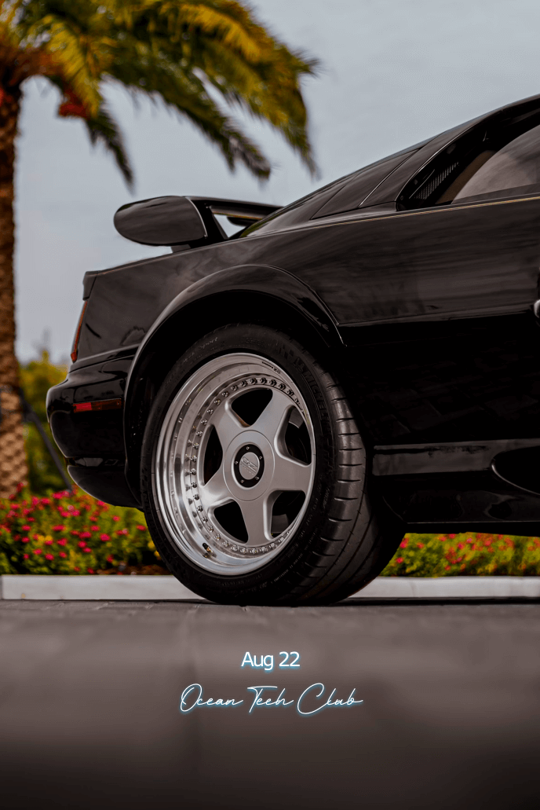

At Ocean Tech Club, you are a private member for the evening.
Be cool, but warm.
There is an unwritten rule that you can arrive as early as 5pm for handmade margaritas and a more intimate hangout.
Official time starts at 6pm and ends at 8pm. Want to continue the evening? This club we recommend heading to Elephante or Bar Chloe afterward. Both solid for new and old friends. Bar Chloe for more intimate and Elephante for more energy.
OTC is:
Exclusive, yet welcoming.
At ease, yet sophisticated.
Casual, yet intellectual.
Dress code:
Suit is too much unless you want to pull it off. Style will be appreciated. A good rule of thumb for this club is to dress like you would if driving a 1999 Lotus Esprit on your way to a friend's sunset chill in their Malibu backyard. Casual, clean, and never out of style.
Photography:
Photography is generally not allowed. If taking photographs, make it anonymous. No photos of others shared on social media. Do a close up shot of a drink or something along those lines. Something style-ized. Be creative. If posting do not tag location or as Ocean Tech Club or as a Local event. Also do not tag people's handles. You may reshare someone's share. You may also tag as OTC. These rules do not apply to analog photography which is completely allowed. Get people's instas or numbers to share with them after you develop the film.
Music:
Music will be different each club. August 22nd we'll be playing a mixed collection of songs I've enjoyed this summer. Get your Shazam out to catch some gems.
Pets:
No pets allowed, excepting seeing eye dogs. No emotional support animals allowed.
Other Etiquette:
Social over Commercial
Culture over Current Events
While there is value in the items on the right, we value items on the left more.
Generally, you can bring 1 guest.
OTC is a community of other ambitious individuals in tech, with similar goals and lifestyles. Have casual, yet intellectual conversations in a backyard atmosphere. Form lasting relationships and maintain contact with the people you meet, and leave each event with new memories, inspiration, and relationships.
Welcome to the club.

{kind=link}
{kind=link}
{kind=link}